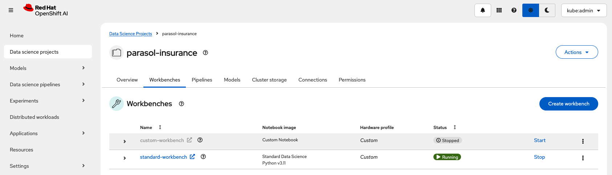
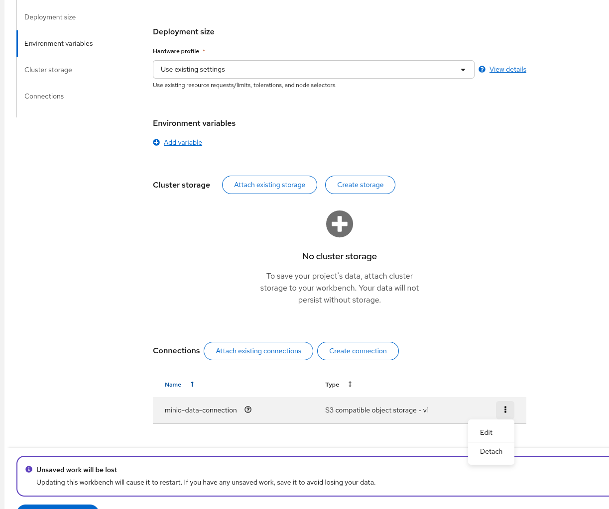
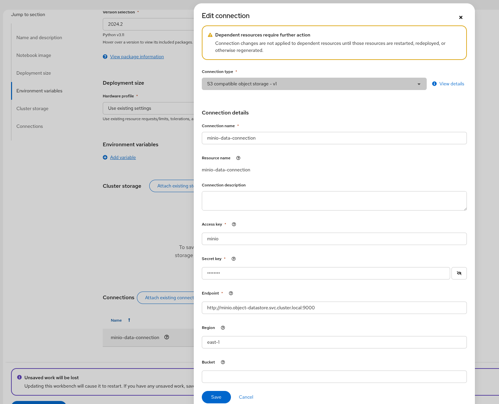

Using S3 Storage
In this module you will set up some S3 based storage in the OpenShift cluster, and the utilize the Python package called Boto3 to explore the existing S3 based storage configuration.
We will also set up scripts to automate uploading the ML models to the locations required by the pipelines in subsequent modules.
What is S3 Storage?
Amazon Simple Storage Service (S3) is a service offered by Amazon Web Services (AWS) that provides object storage through a web service interface.
This lab uses MinIO to implement S3 storage, which is High Performance Object Storage released under GNU Affero General Public License v3.0. MinIO is API compatible with Amazon S3 cloud storage service. Use MinIO to build high performance infrastructure for machine learning, analytics and application data workloads.
For more information about S3: * AWS documentation: What is Amazon S3? * Wikipedia: Amazon S3
Adding MinIO to the Cluster
In this section we will add MinIO S3 storage operator to our dev OpenShift cluster configuration project so Argo can deploy it.
If you need a reference, the ai-accelerator project has MinIO set up in under the tenants/ai-examples folder.
Set up MinIO
-
Create a namespace resource called
object-datastore.yamlin thetenants/parasol-insurance/namespaces/base. This should be an OpenShift Namespace resource namedobject-datastore.Solution
tenants/parasol-insurance/namespaces/base/object-datastore.yamlapiVersion: v1 kind: Namespace metadata: name: object-datastore labels: kubernetes.io/metadata.name: object-datastore -
Modify the
tenants/parasol-insurance/namespaces/base/kustomization.yamlfile to include the new namespace resource:Solution
tenants/parasol-insurance/namespaces/base/kustomization.yamlapiVersion: kustomize.config.k8s.io/v1beta1 kind: Kustomization resources: - parasol-insurance.yaml - object-datastore.yaml -
Create a new directory named
minioin thetenants/parasol-insurancedirectory. -
Create the
baseandoverlaysdirectories inside theminiodirectory. -
Create a file named
kustomization.yamlinside theminio/basedirectory. This should point to theminio/overlays/defaultfolder.Solution
tenants/parasol-insurance/minio/base/kustomization.yamlapiVersion: kustomize.config.k8s.io/v1beta1 kind: Kustomization namespace: object-datastore resources: - ../../../../components/apps/minio/overlays/default -
Add the overlay for
parasol-insurance-dev. This should be akustomization.yamlfile pointing to the minio’s base directory forparasol-insurance-dev.Solution
tenants/parasol-insurance/minio/overlays/parasol-insurance-dev/kustomization.yamlapiVersion: kustomize.config.k8s.io/v1beta1 kind: Kustomization resources: - ../../base -
(Optional) Create for prod overlay. Add the overlay for
parasol-insurance-prod. This should be akustomization.yamlfile pointing to the overlay directory forparasol-insurance-prod.Solution
tenants/parasol-insurance/minio/overlays/parasol-insurance-prod/kustomization.yamlapiVersion: kustomize.config.k8s.io/v1beta1 kind: Kustomization resources: - ../../base
|
The same content will work for both overlays (dev and prod) |
Commit your changes to your fork of ai-accelerator project. Wait for ArgoCD to sync and deploy MinIO.
You should find your minio resource in the object-datastore namespace.
The minio-ui route can be found in object-datastore namespace under Routes. Open this in a new tab and log in with minio:minio123.
Explore the S3 storage.
|
To check your work please refer to This Branch |
Explore S3 with Boto3
We have previously used a custom workbench to explore how to train a model. Now we will use a standard workbench to explore the S3 storage using the Boto3 Python package.
Create a standard workbench
-
Navigate to RHOAI dashboard, and stop the
custom-workbench. -
In your ai-accelerator fork project, create a directory named
standard-workbenchin thetenants/parasol-insurancedirectory. -
Create the
baseandoverlaysdirectories inside thestandard-workbenchdirectory. -
Create a
kustomization.yamlfile inside thestandard-workbench/basedirectory. This should have resources for the workbench pvc, data connection, and workbench notebook. Remember to add the`parasol-insurance` namespace.tenants/parasol-insurance/standard-workbench/base/kustomization.yamlapiVersion: kustomize.config.k8s.io/v1beta1 kind: Kustomization resources: - <add resources here>Solution
tenants/parasol-insurance/standard-workbench/base/kustomization.yamlapiVersion: kustomize.config.k8s.io/v1beta1 kind: Kustomization namespace: parasol-insurance resources: - standard-workbench-pvc.yaml - minio-data-connection.yaml - standard-workbench-notebook.yaml -
Create a file named
standard-workbench-pvc.yamlinside thestandard-workbench/basedirectory. This resource should be a OpenShift PVC resource with 40Gi of storage.Solution
tenants/parasol-insurance/standard-workbench/base/standard-workbench-pvc.yamlkind: PersistentVolumeClaim apiVersion: v1 metadata: name: standard-workbench namespace: parasol-insurance spec: accessModes: - ReadWriteOnce resources: requests: storage: 40Gi volumeMode: Filesystem -
Create a secret named
minio-data-connection.yamlinside thestandard-workbench/basedirectory. This shoud have the minio S3 connection details. This should show up in the Data Connection tab of the Data Science Project if set up correctly.tenants/parasol-insurance/standard-workbench/base/minio-data-connection.yamlkind: Secret apiVersion: v1 metadata: name: minio-data-connection labels: <add RHOAI Dashbaord labels here> annotations: opendatahub.io/connection-type: s3 openshift.io/display-name: minio-data-connection argocd.argoproj.io/sync-wave: "-100" stringData: <add Keys and Values here> type: OpaqueSolution
tenants/parasol-insurance/standard-workbench/base/minio-data-connection.yamlkind: Secret apiVersion: v1 metadata: name: minio-data-connection labels: opendatahub.io/dashboard: 'true' opendatahub.io/managed: 'true' annotations: opendatahub.io/connection-type: s3 openshift.io/display-name: minio-data-connection argocd.argoproj.io/sync-wave: "-100" stringData: AWS_ACCESS_KEY_ID: minio AWS_S3_ENDPOINT: http://minio.object-datastore.svc.cluster.local:9000 AWS_SECRET_ACCESS_KEY: minio123 AWS_DEFAULT_REGION: east-1 type: Opaque -
Create a file named
standard-workbench-notebook.yamlinside thestandard-workbench/basedirectory. This yaml should be aNotebookRHOAI resource with thes2i-generic-data-science-notebook:2024.2image. It should reference the PVC storage and the data connection resource that we created earlier. TIP: You can find an example/reference Notebook resource by using the OpenShift search.Solution
tenants/parasol-insurance/standard-workbench/base/standard-workbench-notebook.yamlapiVersion: kubeflow.org/v1 kind: Notebook metadata: annotations: notebooks.opendatahub.io/inject-oauth: "true" opendatahub.io/image-display-name: Standard Data Science notebooks.opendatahub.io/oauth-logout-url: "" opendatahub.io/accelerator-name: "" openshift.io/description: "" openshift.io/display-name: standard-workbench notebooks.opendatahub.io/last-image-selection: "s2i-generic-data-science-notebook:2024.2" argocd.argoproj.io/sync-options: ServerSideApply=true name: standard-workbench namespace: parasol-insurance spec: template: spec: affinity: {} containers: - name: standard-workbench image: "image-registry.openshift-image-registry.svc:5000/redhat-ods-applications/s2i-generic-data-science-notebook:2024.2" resources: limits: cpu: "2" memory: 8Gi requests: cpu: "1" memory: 8Gi readinessProbe: failureThreshold: 3 httpGet: path: /notebook/parasol-insurance/standard-workbench/api port: notebook-port scheme: HTTP initialDelaySeconds: 10 periodSeconds: 5 successThreshold: 1 timeoutSeconds: 1 livenessProbe: failureThreshold: 3 httpGet: path: /notebook/parasol-insurance/standard-workbench/api port: notebook-port scheme: HTTP initialDelaySeconds: 10 periodSeconds: 5 successThreshold: 1 timeoutSeconds: 1 env: - name: NOTEBOOK_ARGS value: |- --ServerApp.port=8888 --ServerApp.token='' --ServerApp.password='' --ServerApp.base_url=/notebook/parasol-insurance/standard-workbench --ServerApp.quit_button=False --ServerApp.tornado_settings={"user":"user1","hub_host":"","hub_prefix":"/projects/parasol-insurance"} - name: JUPYTER_IMAGE value: 'image-registry.openshift-image-registry.svc:5000/redhat-ods-applications/s2i-generic-data-science-notebook:2024.2' - name: REQUESTS_CA_BUNDLE value: /etc/pki/tls/custom-certs/ca-bundle.crt - name: SSL_CERT_FILE value: /etc/pki/tls/custom-certs/ca-bundle.crt - name: PIPELINES_SSL_SA_CERTS value: /etc/pki/tls/custom-certs/ca-bundle.crt - name: GIT_SSL_CAINFO value: /etc/pki/tls/custom-certs/ca-bundle.crt - name: PIP_CERT value: /etc/pki/tls/custom-certs/ca-bundle.crt ports: - containerPort: 8888 name: notebook-port protocol: TCP imagePullPolicy: Always volumeMounts: - mountPath: /opt/app-root/src name: standard-workbench - mountPath: /dev/shm name: shm - mountPath: /etc/pki/tls/custom-certs/ca-bundle.crt name: trusted-ca readOnly: true subPath: ca-bundle.crt - mountPath: /etc/oauth/config name: oauth-config - mountPath: /etc/tls/private name: tls-certificates workingDir: /opt/app-root/src envFrom: - secretRef: name: minio-data-connection enableServiceLinks: false serviceAccountName: standard-workbench volumes: - name: standard-workbench persistentVolumeClaim: claimName: standard-workbench - emptyDir: medium: Memory name: shm - configMap: items: - key: ca-bundle.crt path: ca-bundle.crt name: workbench-trusted-ca-bundle optional: true name: trusted-ca - name: oauth-config secret: defaultMode: 420 secretName: test-ssl-oauth-config - name: tls-certificates secret: defaultMode: 420 secretName: standard-workbench-tls -
Create a directory named
parasol-insurance-devunder thestandard-workbench/overlaysdirectory. -
Create a
kustomization.yamlfile inside thestandard-workbench/overlays/parasol-insurance-devdirectory. This should point to the base folder of theparsol-insurance-devdirectory:Solution
tenants/parasol-insurance/standard-workbench/overlays/parasol-insurance-dev/kustomization.yamlapiVersion: kustomize.config.k8s.io/v1beta1 kind: Kustomization resources: - ../../base -
Push the changes to your fork, and wait for the Argo synchronization to complete.
-
Navigate to RHOAI dashboard, and you should see an
Standard Workbenchavailable in theWorkbenchestab. -
(Optional) Add an overlay for the
parasol-insurance-prodenvironment.
|
To check your work please refer to This Branch |
Explore S3 in RHOAI Workbench
Boto3 is a commonly used Python package, which is the AWS SDK for communicating with S3 storage providers. It allows you to directly interact with AWS services such as S3, EC2, and more.
Lets create some Python code in a Jupyter notebook to interact with our S3 storage:
-
Go to RHOAI Dashboard and go to the parasol-insurance Data Science Project.
-
As you can see there is a workbench running named standard-workbench.
-
Use the kebab menu and select
Edit workbench. The Environment Variables section is empty, while Connections section shows already attachedminio-data-connectionof S3 type. -
Use the kebab menu of that connection and select
Editto see all connection details (i.e.access key,Endpoint, etc)User interface of older RHOAI versions, was showing S3 connection details directly in Environment Variables section. Starting with RHOAI v2.19, these details can be found in a dedicated pop-up UI behind
Editfunction like described above. -
Launch the workbench and wait for the Jupyter notebook to start up.
-
Create a new Notebook.
-
In a new cell, add and run the content below to install the
boto3andultralyticspackages using pip.!pip install boto3 ultralytics -
In a new cell, add and configure the connection to MinIO S3. Make sure to reference the S3 connection details.
## <Add Imports here> from botocore.client import Config # Configuration ## <Add minio url here from environment variables> ## <Add the access key from environment variables> ## <Add the secret key from environment variables> # Setting up the MinIO client s3 = boto3.client( 's3', endpoint_url=minio_url, aws_access_key_id=access_key, aws_secret_access_key=secret_key, config=Config(signature_version='s3v4'), )Solution
import os import boto3 from botocore.client import Config # Configuration minio_url = os.environ["AWS_S3_ENDPOINT"] access_key = os.environ["AWS_ACCESS_KEY_ID"] secret_key = os.environ["AWS_SECRET_ACCESS_KEY"] # Setting up the MinIO client s3 = boto3.client( 's3', endpoint_url=minio_url, aws_access_key_id=access_key, aws_secret_access_key=secret_key, config=Config(signature_version='s3v4'), ) -
Using the boto3.client variable from the previous step, define a function to list the current buckets in a new cell. Name this function
get_minio_buckets# Function to get MinIO server bucket info # Print the list of buckets in S3 def get_minio_buckets(): # This function retrieves the list of buckets as an example. get_minio_buckets()Solution
# Function to get MinIO server info def get_minio_buckets(): # This function retrieves the list of buckets as an example. # MinIO admin info is not directly supported by boto3; you'd need to use MinIO's admin API. response = s3.list_buckets() print("Buckets:") for bucket in response['Buckets']: print(f' {bucket["Name"]}') get_minio_buckets()We currently have no buckets in the S3 storage. We will create a bucket and upload a file to it.
-
Using the boto3.client variable, create a function to create a new bucket in S3 storage in a new cell. Name it
create_minio_bucketwithbucket_nameas an input parameter.# Function to create a bucket def create_minio_bucket(bucket_name): try: ## add functionality here except Exception as e: print(f"Error creating bucket '{bucket_name}': {e}")Solution
# Function to create a bucket def create_minio_bucket(bucket_name): try: s3.create_bucket(Bucket=bucket_name) print(f"Bucket '{bucket_name}' successfully created.") except Exception as e: print(f"Error creating bucket '{bucket_name}': {e}") -
In a new cell, Use the fuctions that you just created to create 2 buckets:
modelsandpipelines. Use theget_minio_bucketsfunction you created to view the newly created buckets.Solution
create_minio_bucket('models') create_minio_bucket('pipelines') get_minio_buckets() -
Using the boto3.client variable, create a function to upload a file to a bucket. This function should be named
upload_fileand should take 3 input parameters:file_path,bucket_name, andobject_name.Solution
# Function to upload a file to a bucket def upload_file(file_path, bucket_name, object_name): try: s3.upload_file(file_path, bucket_name, object_name) print(f"File '{file_path}' successfully uploaded to bucket '{bucket_name}' as '{object_name}'.") except Exception as e: print(f"Error uploading file '{file_path}' to bucket '{bucket_name}': {e}") -
Download the
accident_detect.onnxmodel and upload the file to S3 storage under themodelsbucket. The onnx file should be stored under the path:weights/accident_detect.onnx. You can use this snippet to download the onnx model:# Download the model from ultralytics import YOLO model = YOLO("https://rhods-public.s3.amazonaws.com/demo-models/ic-models/accident/accident_detect.onnx", task="detect")Solution
# Download the model from ultralytics import YOLO model = YOLO("https://rhods-public.s3.amazonaws.com/demo-models/ic-models/accident/accident_detect.onnx", task="detect") # Upload the file upload_file('weights/accident_detect.onnx', 'models', 'accident_model/accident_detect.onnx') -
Create a function to view the contents of the bucket. The function should be named
get_minio_contentand should have an input parameter ofbucket.Solution
# Function to get the content in the bucket def get_minio_content(bucket): # This function retrieves the content in the bucket # MinIO admin info is not directly supported by boto3; you'd need to use MinIO's admin API. print("Content:") for key in s3.list_objects(Bucket=bucket)['Contents']: print(f' {key["Key"]}') -
Call the newly created function to view the file contents of the
modelsbucket.Solution
get_minio_content('models')
Questions for Further Consideration
Additional questions that could be discussed for this topic:
-
What other tools exist for interacting with S3? Hint, s3cmd is another quite popular S3 CLI tool.
-
Could a shortcut to the MinIO Console be added to OpenShift? Hint, see the OpenShift
ConsoleLinkAPI, here’s an example. -
What’s the maximum size of an object, such as a ML model that can be stored in S3?